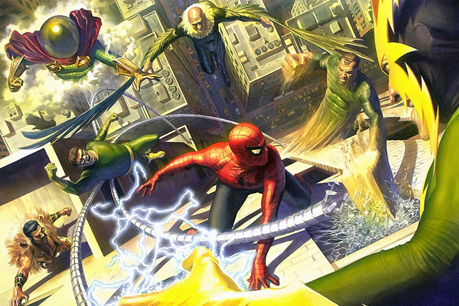

Biografía

Spider-Man es un superhéroe creado por Stan Lee y Steve Ditko. Peter Parker obtiene poderes arácnidos tras la mordedura de una araña radiactiva y protege Nueva York mientras enfrenta villanos peligrosos.
Spider-Man es un superhéroe creado por Stan Lee y Steve Ditko. Peter Parker obtiene poderes arácnidos tras la mordedura de una araña radiactiva y protege Nueva York mientras enfrenta villanos peligrosos.


